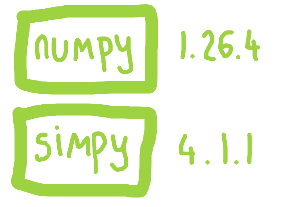
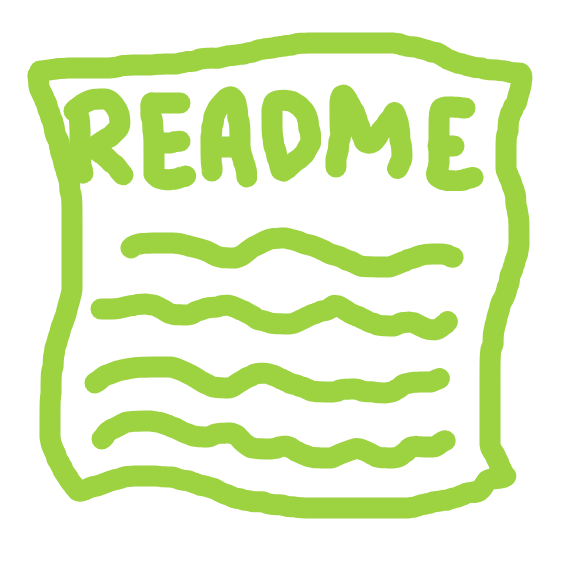
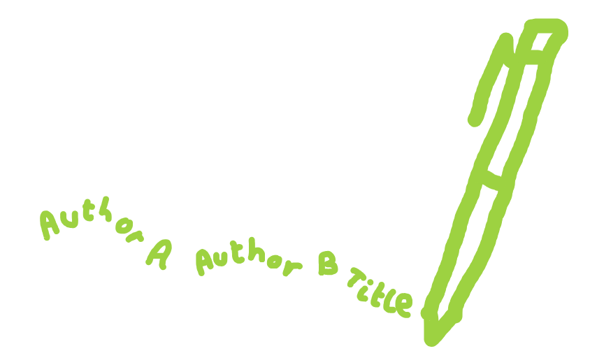
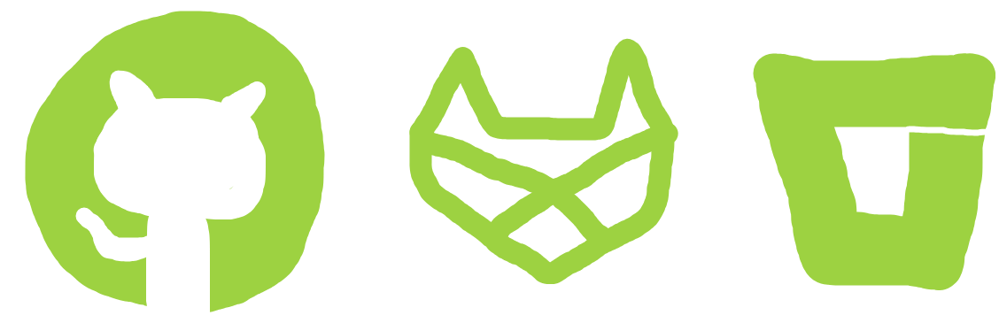
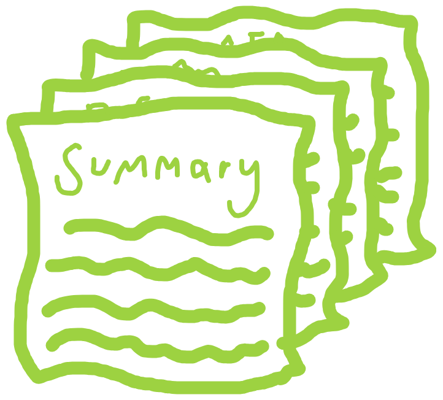
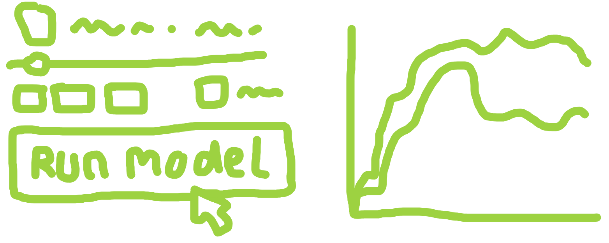

38 The STARS Framework
![]()
The content in this chapter is based on the paper “Towards sharing tools and artefacts for reusable simulations in healthcare” (10.1080/17477778.2024.2347882) by Tom Monks  , Alison Harper and Nav Mustafee .
, Alison Harper and Nav Mustafee .
The drawings are created using sketch.io.
38.1 STARS: Sharing Tools and Artefacts for Reusable Simulation
The STARS framework is a set of practical guidelines to help modellers share their simulation models in a way that makes them:
- ✅ Accessible – so others can easily find and access your model.
- ✅ Reusable - so people can use and adapt the model for their own work.
- ✅ Understandable and well-documented - so others can engage with and understand your model better.
You can use the framework to guide how you share your DES model.
The framework is described in:
Monks, T., Harper, A., & Mustafee, N. (2024). Towards sharing tools and artefacts for reusable simulations in healthcare. Journal of Simulation, 1–20. https://doi.org/10.1080/17477778.2024.2347882.
It is divided into essential and optional components.
- Essential components - the minimum steps needed to share models that are citable, functional, well-licensed and available long-term.
- Optional components - a step further, enhancing accessibility, understanding and clarity of the model.
{kind=link}
38.2 Essential components
38.2.1 Open licence
Before sharing code, it’s important to choose an appropriate open-source licence. A licence tells others how they can use, modify or share your work. Without a licence, you retain exclusive copyright, and others would not be able to legally reuse the model.
A common approach in data science is to use a permissive licence like an MIT licence. Other options are available, with more restrictive licences like GPL licences requiring anyone who modifies your work to share it under the same terms. The website https://choosealicense.com/ can be helpful in choosing a licence that suits you.
A licence is simply a file (often just LICENCE) add to the root of your repository. It is easy to add - check out these handy instructions from GitHub.
38.2.2 Dependency management
To make sure your code runs correctly for others (or for yourself in the future), you need to list the required software and versions. Without this, users may face errors due to missing dependencies.
In Python, common tools for managing this are:
- Pip virtual environments with a
requirements.txtfile. - Conda environments with a
environment.yaml/ymlfile. - Poetry with a
pyproject.tomlfile.
The HSMA - Programming in Python ebook has a chapter on “Creating Environments with Python” which guides you on how to set up an pip virtual environment.

38.2.3 Use Free and Open-Source Software (FOSS) languages
We already meet this recommendation! 😊🎉 Python is an example of a FOSS language. FOSS provides freedom: it grants users the rights to adapt and share copies of their model however they choose.
38.2.4 Minimum documentation
At a minimum, you should include some documentation alongside your model that describes:
- What the model does.
- How to install and run the model to obtain results.
- How to vary parameters to run new experiments.
This can be done easily using a README.md file. This is a markdown file stored in the root of your repository.

38.2.5 Open Researcher and Contributor Identifier (ORCID)
An ORCID is a free, unique, persistent ID that identifies and links authors to their research. It ensures that any outputs and publications are correctly attributed to you.
It is recommended to include your ORCID in the README.md. For example:
Jane Doe ORCID: https://orcid.org/0000-0000-0000-0000.
Or as a markdown badge…
[](https://orcid.org/0000-0000-0000-0000)
38.2.6 Citation information
Including citation instructions makes it easier for others to reference and give credit to your model. Platforms like GitHub support CITATION.cff, which are files that contain details like author names, version, and links to the original work. These can be created using cff-init.

38.2.7 Remote code repository
Remote code repositories like GitHub, GitLab, and Bitbucket help manage and share code.
- They provide version control, allowing developers to track changes, revert to previous versions, and collaborate through branching.
- Users can clone a repository to use a model and pull updates as improvements are made.
- Features like issues (for discussion and bug tracking) and releases (for tagging stable versions) make collaboration easier.

38.2.8 Open science archive
To ensure simulation models remain accessible over time, they should be stored in open science archives like Zenodo, Figshare, and the Open Science Framework. These platforms provide DOIs (Digital Object Identifiers) for citation and follow principles that guarantee long-term storage and discoverability. Unlike GitHub, which can change or be deleted, archives preserve models permanently.
38.3 Optional components
38.3.1 Enhanced documentation
Going beyond the minimum documentation requirements, good documentation should include:
- A plain-language summary of the project context and model.
- Licence and citation details.
- Contribution instructions.
- Installation instructions.
- A structured code walk through of the model.
- Documentation of the modelling cycle using TRAnsparent and Comprehensive model Evaluation (TRACE) (Ayllón et al. (2021)).
- Annotated simulation reporting guidelines (e.g. STRESS-DES).
- Clear description of model validation including its intended purpose.
Great tools for creating your documentation include:
- Quarto markdown (
.qmd) and Jupyter notebook (.ipynb) files, which allow you to combine code and text in an interactive format. - Quarto and Jupyter Book, which allow you to turn these files into structured websites.

38.3.2 Documentation hosting
Services like GitHub Pages, GitLab Pages, BitBucket Cloud, and Quarto Pub can host documentation websites for free.
This book is created from quarto markdown files (.qmd) which have been structured into a book (via a _quarto.yml file), and hosted using GitHub pages.
38.3.3 Online coding environment
There are tools which enable users to run code online without any installation or downloads. A FOSS example for jupyter notebooks is BinderHub (https://mybinder.org) which creates an online Jupyter environment from a public GitHub or GitLab repository. It packages the code and any dependencies into a container, from which the notebooks can be run.
38.3.4 Model interface
Turning your model into an application will make it more accessible to non-technical users who may be unfamiliar with codings. Python options include:
- Streamlit (https://streamlit.io/).
- Shiny for Python (https://shiny.posit.co/py/).
- Plotly Dash (https://dash.plotly.com/).
Check out Chapter 36 for more information on how to create a streamlit web application for your DES model.

38.3.5 Web app hosting
Services like Streamlit Community Cloud and ShinyApps offer free hosting tiers which can be used to deploy your web app, making it freely accessible via a website link.
38.4 Example DES models implementing the STARS framework
For inspiration, check out these three examples of healthcare DES models which implement the framework, as linked in the paper describing the framework (Monks et al. (2024)).
38.4.1 Example 1: SimPy
Code: https://github.com/pythonhealthdatascience/stars-treat-sim.
Archived code: https://doi.org/10.5281/zenodo.10026327.
STARS components:
- ✅ MIT licence.
- ✅ Conda environment.
- ✅ SimPy python model.
- ✅ Shared on GitHub.
- ✅
CITATION.cffand ORCID meta-data. - ✅
README.md. - ✅ Archived on Zenodo.
- ✅ Online coding environment via Binder.
- ✅ Enhanced documentation using electronic notebook.
38.4.2 Example 2: SimPy
Code: https://github.com/pythonhealthdatascience/stars-streamlit-example and https://github.com/pythonhealthdatascience/stars-simpy-example-docs.
Web app: https://stars-simpy-example.streamlit.app/.
Documentation: https://pythonhealthdatascience.github.io/stars-simpy-example-docs.
Archived code: https://doi.org/10.5281/zenodo.10055169 and https://doi.org/10.5281/zenodo.10054063.
STARS components:
- ✅ MIT licence.
- ✅ Conda environment.
- ✅ SimPy python model.
- ✅ Shared on GitHub.
- ✅
CITATION.cffand ORCID meta-data. - ✅
README.md. - ✅ Archived on Zenodo.
- ✅ Online coding environment via Binder.
- ✅ Enhanced documentation using Jupyter Book and STRESS-DES.
- ✅ Documentation hosted on GitHub pages.
- ✅ Web app using streamlit.
- ✅ Web app hosted using streamlit community cloud.
38.4.3 Example 3: CIW
Code: https://github.com/pythonhealthdatascience/stars-ciw-example.
Web app: https://pythonhealthdatascience.shinyapps.io/stars-ciw-examplar.
Documentation: https://pythonhealthdatascience.github.io/stars-ciw-example.
Archived code: https://doi.org/10.5281/zenodo.10051495.
STARS components:
- ✅ GNU Public Licence 3.
- ✅ Conda environment.
- ✅ ciw python model.
- ✅ Shared on GitHub.
- ✅
CITATION.cffand ORCID meta-data. - ✅
README.md. - ✅ Archived on Zenodo.
- ✅ Online coding environment via Binder.
- ✅ Enhanced documentation using Quarto and STRESS-DES.
- ✅ Documentation hosted on GitHub pages.
- ✅ Web app using shiny for python.
- ✅ Web app hosted on shinyapps.io.